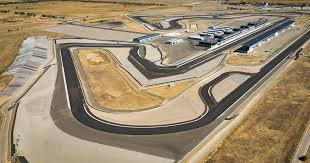

Penundaan Grand Prix Kazakhstan MotoGP 2024
Kamis, 09 Mei 2024 12:00 WIB
MotoGP mengumumkan penundaan Grand Prix Kazakhstan. Diplot sebagai putaran kedelapan musim ini, balapan di Sokol International Racetrack diundur hingga batas waktu yang belum ditentukan.
Penundaan terpaksa dilakukan menyusul bencana banjir yang melanda kawasan Asia Tengah. Seharusnya MotoGP Kazakhstan 2024 berlangsung pada 14-16 Juni mendatang setelah GP Italia di Mugello.
Kunjungan perdana MotoGP di Kazakhstan awalnya dijadwalkan tahun lalu sebagai bagian dari perluasan kalender kejuaraan dunia. Tetapi karena Sirkuit Sokol belum siap, balapan pun harus dibatalkan.
GP Kazakhstan kembali dicantumkan dalam kalender balap musim ini, untuk akhir pekan 14-16 Juni 2024. Namun, pada 3 Mei, MotoGP menginformasikan bahwa race di Sokol mesti ditunda.
MotoGP Kazakhstan 2024 ditangguhkan akibat situasi darurat banjir di wilayah Asia Tengah, yang meliputi sebagian besar Kazakhstan. Ini disebut bencana banjir terburuk di kawasan itu dalam 80 tahun terakhir.
Sungai Ural yang mengalir melalui Kazakhstan dan Rusia meluap akibat mencairnya salju dan es dengan cepat yang dipicu oleh suhu tinggi serta hujan lebat pada bulan April lalu.
Cuaca ekstrem yang belum pernah terjadi sebelumnya menyebabkan banjir di Asia Tengah, yang menyebabkan keadaan darurat nasional di Kazakhstan dan memaksa banyak penduduk untuk mengungsi,” kata pernyataan resmi MotoGP, Jumat (3/5/2024).
"MotoGP tidak bertanggung jawab untuk menambah beban kepada pihak berwenang atau layanan saat mereka berupaya membantu puluhan ribu orang yang terkena dampak di seluruh negeri.”
“Oleh karena itu, Sokol International Racetrack tidak akan menjadi tuan rumah MotoGP pada tanggal yang telah diumumkan sebelumnya, dan pembaruan lebih lanjut akan dipublikasikan setelah dikonfirmasi.”
“Sebagai prioritas utama kami, MotoGP menyampaikan belasungkawa dan dukungan kami kepada warga Kazakhstan dan semua yang terdampak banjir di Asia Tengah. Kami berharap negara, wilayah, dan seluruh komunitas dapat pulih secepatnya.”
Meskipun belum ada tanggal baru untuk penyelenggaraannya, MotoGP memastikan bahwa balapan perdana di Kazakhstan tetap dilaksanakan tahun ini. Dan homologasi Sirkuit Sokol akan dilakukan setelah GP Catalunya, pada akhir Mei.